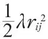
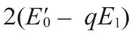
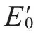
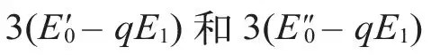
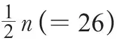
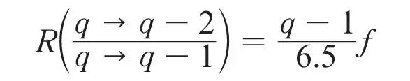

英文
英文拉尔夫·福勒
编者按
到20世纪30年代时，物理学家们认为他们已经对原子核的结构非常了解了：原子核的质量由所包含的质子数决定，而质子的一部分电荷被β衰变中带负电的电子所中和。但是，即使这样，仍然不知道这么多相互排斥的质子怎样才能稳定地排布在一个非常狭小的空间中。在本文中，物理学家拉尔夫·福勒提出了一个能够解释这种稳定性的理论，该理论基于放射性原子会放出α粒子的实验证据。当然，正确的解释需要涉及另一种核粒子，即直到1932年才发现的中子。 英文
卢瑟福勋爵和埃利斯博士在他们最近发表的文章[1]中指出，大量镭C'同位素放射出的γ射线可以用一种简单而有序的方法进行归纳，他们指出，γ射线的多样性主要是由多个α粒子被激发到同一个激发态上，而不是由同一个α粒子被激发到多个激发态上造成的。他们对由镭C'放射出的γ射线进行归纳的方法也许并不是唯一可行的，但是任何适用的方法可能都会呈现出相同的特征。 英文
这样，我们就迫切地需要建立具有这种特征的模型并对模型进行细致的理论研究，这个模型可以是一个只有简单相互作用的模型，也可以是包含了大约50个α粒子的原子核模型。卢瑟福和埃利斯得出的关于γ射线的最主要的特征可以用以下的形式来表示：
hv = pE0 － qE1，
p是一个取值从1到4的整数，而q是一个从0开始的整数，最大可能只能取到10；在镭C'同位素的衰变实验中，E1的取值大约是E0取值的1/16，与镭B同位素衰变实验中相应的E1值大致相当。对于镭C'同位素来说，我们需要选取不同的E0值。 英文
我们可以研究以下两个可能成功解释原子核稳定性的模型。第一个模型认为每个α粒子都可以在中心势场中独立运动（这个中心势场指的是与其他α粒子之间的复杂相互作用），而整个原子核又受到形式为V(rij)的微扰势场的影响，其中V(rij)是每对粒子中第i个α粒子和第j个α粒子之间的相互作用，其中rij是第i个α粒子和第j个α粒子之间的距离。这样的模型与包含电子的原子模型非常类似，不同的是α粒子的波函数是对称的，而不像电子的波函数那样是反对称的。这种本质上的区别允许原子核中的粒子发生重复激发，而原子中的电子是不可能出现重复激发的情况的。在初步的讨论中，我们可以把三维情况进一步简化到一维情况。 英文
第二个模型假设每对标记为i，j的α粒子对对彼此有势能为

的相互作用。很明显，这个模型对作用力所做的近似是一个非常不好的物理近似，但是这个近似的优点在于我们可以对其进行严格的计算而不只是用微扰理论来进行近似研究。关于以上这两个模型的研究已经开始，但到目前为止只完成了被简化到一维情况下的第一个模型。 英文
就像任何类似的合理模型那样，我们只把注意力集中到最普遍的特征上面来，并得到了以下的结果，这些结果在很大程度上和卢瑟福、埃利斯的构想十分吻合，但是似乎也明确说明我们需要建立一个更加精细的模型。模型中由多个α粒子跃迁到同一个激发态上所产生的能级具有这样的形式，即相应的γ射线（如果所有γ射线都被能放射出来）的频率大致为：
hv = p(E0 － qE1)
如果将卢瑟福与埃利斯的构想稍加修正，由此得出的射线频率将和上式中的射线频率吻合得很好。因此我们用频率关系对应于2(E0 – qE1)和

的两组γ射线代替以前提出的频率关系对应于2E0 – qE1的单组γ射线，其中，E0和
几乎相等。我们还用频率关系对应于3(E0 – qE1)、
的三组γ射线来代替频率关系对应于3E0 – qE1的单组γ射线，由此类推。此外，很明显地，当我们考虑三维情况下的该模型时，将会出现高能级的简并情况。并且，理论表明，比值E0/E1在数值上应该略小于
，与我们在镭C'同位素中观察到的E0/E1值16相差得还不算太大。理论上还表明，不同的放射性原子核的E0和E1值（尤其是E1的值）不会相差太多。在镭的C'和B同位素的观测结果中，E1的观测值的确相近，但是E0的值却并非如此。而其他原子核放射出的γ射线还没有用这种方法分析过。 英文
所有这些特性都是很普遍的，并且我们得到的一致性结果也很有说服力。然而我们还可以进一步估算各种不同的γ射线的相对放射频率，这些不同的放射频率对应α粒子从q激发态到q–1，q–2，q–3等激发态的跃迁。按照前面所提到的相互作用能量的表达形式，q→q–3的跃迁过程应该不存在，即使存在也是非常罕见的，而q→q–4，q→q–5等情况的跃迁过程也都不存在。理论上给出了q→q–2和q→q–1这两个跃迁发生频率的之比R的第一级近似形式：

式中的f因子一定小于单位1，但可能不太会小于1/10。高阶项对比值R的绝对值有很大的影响，所以如果上面提到的构想中相应的R值与实验结果不能严格一致时，我们也不必太在意。R的一个具有普遍重要性的特征是，它随着q的增大而增大。在对任何有效模型进行修正的时候，我们都必须记住R的这个特征。以上提到的所有特征到现在为止还不能确定是否可以整合到另一个令人满意的模型当中去，必须经过仔细地反复验证。 英文
以上提出的关于镭C'同位素的构想中，p的取值可以从1到4，因此，构想中包含了q→q–4的跃迁。在前面提到的简单相互作用模型中q→q–4的跃迁肯定是被禁止的，而q→q–3的跃迁有可能被禁止。但是，如果相互作用项是由三个或者三个以上粒子的坐标所决定的，而且不能化简成只由两个粒子的坐标所决定的两体相互作用项的总和时，上面所说的q→q–3、q→q–4的跃迁就可能发生了。以上所讨论的相互作用项在形式上都很相近，我们想象不到这些相互作用项的影响会如此之大。如果上面提出的考虑三个粒子相互作用的构想最终被证明是正确的，那么我们也许可以回过头来，从γ射线的强度出发来获知这些三重或者多重相互作用的大小。 英文
总之，我们可以认为卢瑟福和埃利斯所提出的构想到现在为止已经被仔细地分析过了，这是只从频率的角度进行研究的，从这方面看，这一构想似乎经过细微的修正就可以完全符合可以预见的简单量子力学模型的要求。然而，这样的一个模型对强度比的要求非常严格，就我所知目前还没有人提出这方面的有关方案和检测方法。我们希望今后在这方面的研究工作能富有成效。 英文
虽然这些模型也许可以很好地解释镭C'的复杂谱线，但不要忘记，钍C'的对应谱线要简单得多，而且不包括镭C'谱线中那些由q→q–2、q→q–3、q→q–4跃迁所产生的γ射线族——除了几条非常微弱谱线以外。当然，钍C'的相应谱线中还包含了另外一条非常强的独立的高频γ射线。如果我们试图对以上现象继续进行分析（我认为这个分析无疑重要的），我们最终不得不得出这样的结论，适用于钍C'的模型将无法用来解释镭C'的实验事实，对于这个结果，我们大可不必感到惊讶或失望。上面提到的q→q–1的跃迁方案，仍然可以很好地解释镭B、镭C'、钍C'（可能还有其他的放射性原子核）衰变放射出的γ射线谱中共有的重要特征。更有可能发生的情况是，镭C'和钍C'谱线中惊人的差异应该与镭C'比钍C'多出两个自由质子有关。镭C'的原子量是4n+2，而钍C'的原子量是4n。 英文
在上面所提出的模型中，质子的效应从一开始就被忽略了，因为目前似乎还没有将质子效应整合到模型中的简单方法。但是可以明确的是，在正常态和激发态，由自由质子所引发的普遍效应会使低频跃迁q→q–1在高频情况下重复发生，但是高频情况下的跃迁同样依赖于q，两种情况下的常数变化代表了一个质子的激发能。 英文
（王静 翻译；李军刚 审稿）